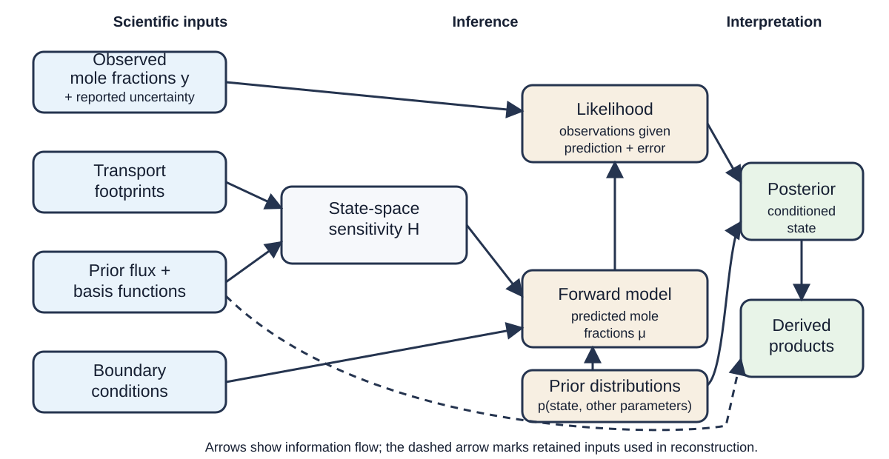

How an Atmospheric Inversion Works#
An atmospheric inversion asks which surface fluxes are consistent with a set of atmospheric mole-fraction observations, a model of atmospheric transport, and stated assumptions about the fluxes and errors. RHIME answers this question with a posterior distribution over a finite set of flux-scaling state parameters and, depending on the selected recipe, boundary-condition and error parameters.
The result is not a direct measurement of every flux grid cell. It is a conditional estimate: the observations directly constrain combinations of the state that the observing network and transport connect to those observations. Prior relationships can also update correlated state parameters indirectly. This page explains that path before you choose a RHIME workflow.
From observations to a posterior#
{kind=link}

Project-authored conceptual schematic maintained with these docs. The source–receptor relationship follows Seibert and Frank (2004), and the Bayesian inversion structure follows Ganesan et al. (2014); full references are listed below. The dashed arrow indicates that derived products may also use retained inputs and reconstruction metadata. The diagram is a general map, not the specification of a particular RHIME recipe.#
The journey has seven parts:
Observe atmospheric mole fractions. Each observation represents a gas measurement at a site and inlet over a sampling or averaging interval. This introduction focuses on surface observations: direct measurements of atmospheric mole fraction at a fixed location. The reported uncertainty describes measurement information available to the inversion; it does not include every possible model error.
Describe where the sampled air has been. A transport model supplies a footprint for each observation. A footprint is a receptor-oriented sensitivity: it describes how a surface flux at an upstream place and time would influence the mole fraction at the measurement. It is not a flux map. This source–receptor interpretation is described by Seibert and Frank (2004).
Choose a reference flux and a state representation. A prior flux is the chosen reference surface-exchange field for this inversion, before the selected observations update its state parameters. A basis or state operator defines how a finite state vector maps onto the gridded field. RHIME combines the footprint, reference flux, and basis representation into a sensitivity matrix, conventionally called \(H\). The meaning of one state parameter depends on the selected basis operator; it is not always one independently estimated grid cell. Reducing a spatial field to a state vector can leave unresolved variability, as discussed by Kaminski et al. (2001).
Represent air entering the regional domain. A finite regional transport calculation does not describe the complete earlier history of an air mass. Boundary conditions represent mole fractions entering the model domain. A recipe may keep their contribution fixed or infer scaling state parameters for it.
Run the forward model. The model maps proposed state parameters to predicted mole fractions at the observation points. In a simple one-component case, its mean has the form
\[\mu = Hx + H_{bc}b + o,\]where \(x\) contains the flux-scaling state, \(H_{bc}b\) is an optional scaled boundary contribution, and \(o\) represents any additional offset selected by the recipe. A multisector recipe sums one \(Hx\) contribution per sector. The standard and multisector model page gives the equations and exact components for those recipes; CO₂ model family routes advanced CO₂-family readers.
Compare predictions with observations. The likelihood states how the observed mole fractions are distributed around the forward-model mean. Its error model may combine reported observation error with explicitly selected model–data mismatch or covariance terms. A fitted mismatch term absorbs differences represented by that likelihood; it does not identify whether a difference came from transport, fluxes, observations, or another structural error.
Condition the state on the data. Probability distributions on the state and other inferred parameters are combined with the likelihood to form the posterior. RHIME samples this distribution. Posterior samples can then be summarized as scaling estimates, reconstructed flux fields, predicted observations, regional totals, or other recipe-supported derived products. Hierarchical treatment of atmospheric-inversion uncertainties in this modelling lineage is described by Ganesan et al. (2014).
Two different things are often called a “prior”: the prior flux is the reference physical field, while a prior distribution expresses uncertainty about a scaling state parameter or another inferred parameter. RHIME commonly uses both.
What the result is conditional on#
The posterior is conditional on the observations that were selected and on the chosen footprints, prior flux, basis or state representation, boundary conditions, probability distributions, and likelihood. Only uncertainties represented in that model can be propagated into its posterior. Transport, boundary, representation, and shared structural errors do not become uncertain merely because the sampler returns a distribution.
Sensitivity is uneven. A state direction with weak or no sensitivity through \(H\) receives little or no direct likelihood information. Its posterior is then governed mainly by its prior structure and by any correlations or hierarchy coupling it to informed state directions. Different sectors or regions can also produce similar signals at the available sites. Consequently, a close fit in observation space does not by itself:
prove that a particular source or sector caused an observed signal;
validate the transport, boundary conditions, or prior flux;
resolve flux patterns finer than the data and state representation support;
show that a narrow posterior includes unrepresented systematic uncertainty; or
turn a derived product into an independent observation.
Finite transport windows and transport-model limitations in regional Lagrangian inversions are discussed by Vojta et al. (2022). These limits make prior- and posterior-predictive checks, convergence diagnostics, sensitivity tests, and comparison with independent information part of scientific interpretation, not optional decoration.
Choose your next page#
To select standard, multisector, CO₂-only, or linked CO₂/O₂ guidance, use Choose a RHIME model recipe.
To run a standard one-component or multisector inversion, start with the current RHIME terminology and Python quickstart and use the command-line guide when you prefer a configuration file.
To separate preparation, prior prediction, sampling, diagnosis, and postprocessing into inspectable artifacts, follow Staged RHIME workflows.
To inspect standard or multisector equations, variable roles, priors, and likelihood choices, read Standard and multisector RHIME models.
To understand the data expected by established and legacy workflows, continue to Getting started with OpenGHG Inversions.
Glossary#
- Atmospheric mole fraction
The amount of a gas relative to the amount of air in a sample. It is the observed quantity used by these inversions.
- Flux and emission
A flux is exchange across the surface and can be signed, including uptake. An emission is a one-way release to the atmosphere. Use the term matching the physical process.
- Footprint
The sensitivity of one receptor observation to upstream surface fluxes over space and time, calculated by an atmospheric transport model.
- Prior flux
A reference surface-flux field used to construct the forward sensitivity and reconstruct physical fluxes.
- Prior distribution
A probability distribution for an inferred state parameter or other parameter before the selected observations are used.
- Boundary condition
Mole fractions assigned to air entering from outside the domain or predating the finite transport window. Transport maps these values to a receptor contribution that forms part of the modelled background.
- Basis function, state, and scaling
Basis functions define how a finite state vector maps onto the flux grid. RHIME projects gridded footprint–reference-flux sensitivity into the matching state-space \(H\). A scaling is one possible state parameter that modifies the corresponding reference flux.
- Forward model
The calculation that maps proposed flux, boundary, and other state parameters to predicted mole fractions at the observations.
- Likelihood
The probability model for the observations conditional on the forward-model prediction and the selected error model.
- Posterior
The joint probability distribution of inferred quantities after combining the prior distributions with the likelihood for the selected observations.
- Model–data mismatch
A likelihood term representing differences between modelled and observed mole fractions beyond the reported observation error. It does not diagnose their physical cause.
- Posterior predictive
Simulated observations drawn from the fitted probability model. They support checks of whether the fitted model reproduces selected observation-space summaries, but do not independently validate transport or source attribution. They are not additional measurements.
- Derived product
A quantity calculated from inversion inputs and posterior samples, such as a scaled flux field or regional total. Its interpretation inherits the inversion’s assumptions and limits.
References#
Ganesan, A. L. et al. (2014), “Characterization of uncertainties in atmospheric trace gas inversions using hierarchical Bayesian methods”, Atmospheric Chemistry and Physics, doi:10.5194/acp-14-3855-2014.
Kaminski, T. et al. (2001), “On aggregation errors in atmospheric transport inversions”, Journal of Geophysical Research: Atmospheres, doi:10.1029/2000JD900581.
Seibert, P. and Frank, A. (2004), “Source-receptor matrix calculation with a Lagrangian particle dispersion model in backward mode”, Atmospheric Chemistry and Physics, doi:10.5194/acp-4-51-2004.
Vojta, M. et al. (2022), “A comprehensive evaluation of the use of Lagrangian particle dispersion models for inverse modeling of greenhouse gas emissions”, Geoscientific Model Development, doi:10.5194/gmd-15-8295-2022.